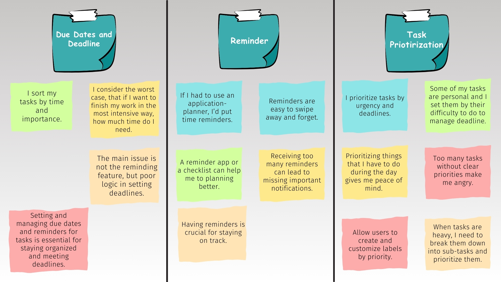
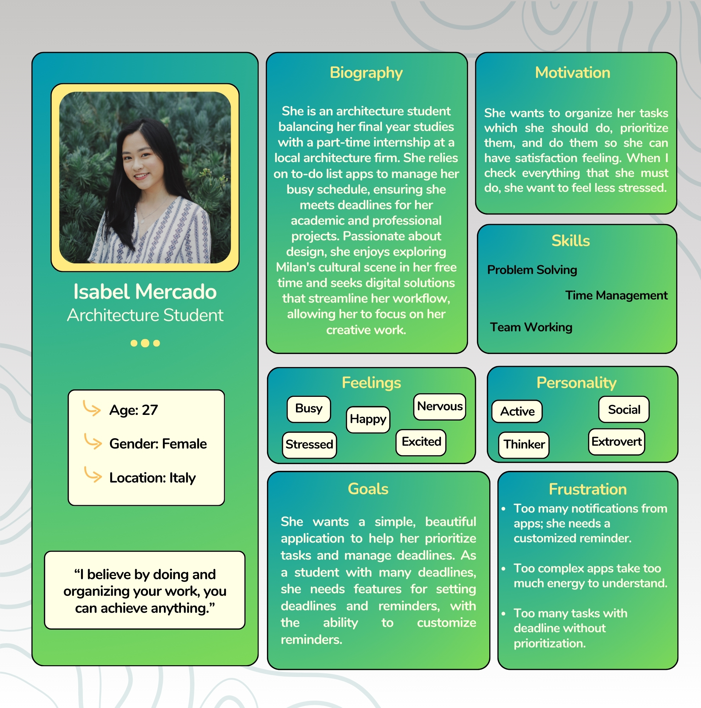
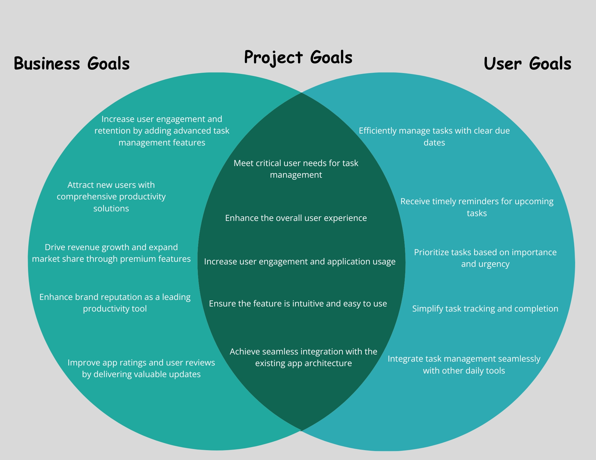
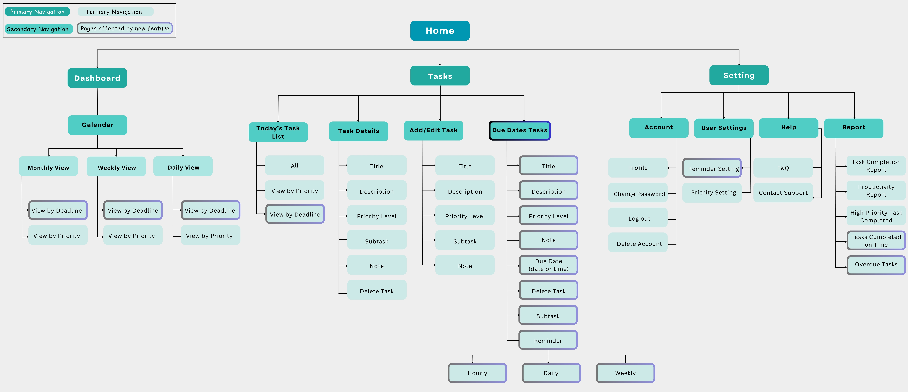
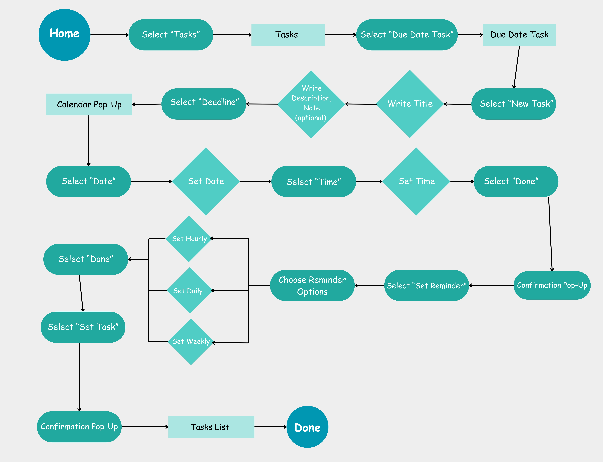
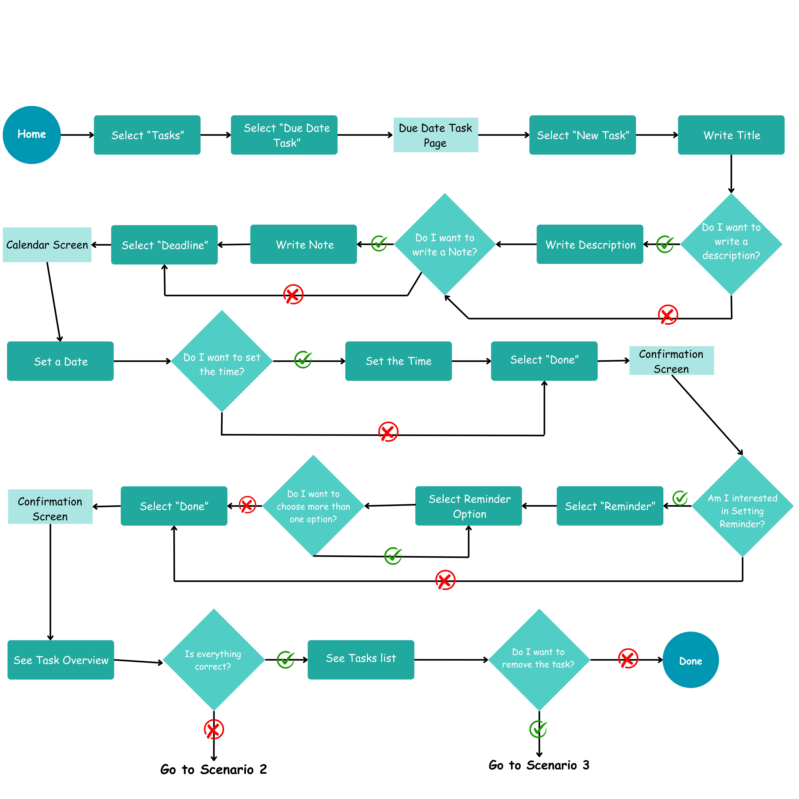
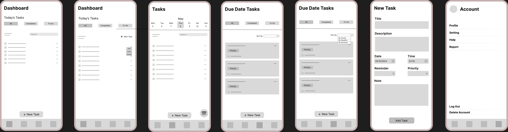

GoalGetter

Research
Overview
Background
In today's fast-paced world, managing tasks effectively is crucial for productivity and peace of mind. As someone who juggles multiple tasks daily, I understand the importance of organization and timely reminders. To address this need, I aimed to enhance a to-do list application by introducing a feature that allows users to set due dates and reminders with varying priorities.
Problem
Without a system to manage deadlines, reminders, and task priorities, users often face challenges such as forgetting deadline of important tasks, feeling overwhelmed by the sheer volume of work, and struggling with prioritizing them. This lack of organization can lead to decreased productivity and increased stress. Users need a reliable way to keep track of their tasks, ensure timely completion, and prioritize effectively to avoid confusion and inefficiency.
Goal
The goal of this feature is to empower users to manage their tasks more efficiently by enabling them to set due dates, reminders, and prioritize tasks which have deadline. This functionality aims to help users stay organized, remember important deadlines, and focus on high-priority tasks. Ultimately, this will enhance productivity, reduce stress, and provide users with a clear and organized overview of their tasks.
Reseach Goal
The primary goal of my research was to identify the key features that users of a to-do list application find most valuable. Specifically, I aimed to understand the importance of setting deadlines, and reminders tasks. By gaining insights into user preferences and pain points, I sought to inform the design and development of a feature that effectively addresses these needs, ultimately enhancing user productivity and task management.
Methodology
To achieve this goal, I employed a mixed-method approach, combining quantitative and qualitative research techniques:
- Survey: I conducted a comprehensive survey targeting a diverse group of users. The survey included questions about their current use of to-do list applications, the features they find most useful, and their specific needs related to task management. The survey data provided a broad understanding of user preferences and highlighted the critical features they seek in a to-do list app.
- User Interviews: in depth interview with 5 people.
- Competitor Analysis
Competitive Analysis

User Interviews
Overview
To gain deeper insights into user needs and preferences, I conducted interviews with five young students aged between 25 and 35. Through these interviews, I identified key themes and categorized the data into three main clusters: "Deadline," "Reminder," and "Task Prioritization". The "Deadline" cluster highlights the importance of setting and managing due dates for tasks, ensuring timely completion. The "Reminder" cluster emphasizes the need for notifications and alerts to help users remember their tasks and stay on track. The "Task Prioritization" cluster focuses on the necessity of organizing tasks by their level of importance and urgency to optimize productivity according to the deadline and importance. This affinity mapping process provided a clear visual representation of user insights, guiding the development of features that address these critical aspects of task management.
User Persona
Design
Project Goal
The goal of this project is to develop a comprehensive and user-friendly feature for a to-do list application that enhances task management through the integration of due dates, reminders, and prioritization options. By addressing the critical needs identified through user research, including the ability to set and manage deadlines, and receive timely notifications, this feature aims to improve productivity and reduce the stress associated with managing multiple tasks. Ultimately, the feature will empower users to stay organized, and meet their deadlines, thereby enhancing their overall task management experience.
Information Architecture
The information architecture design step made me aware of the existing app structure. This was crucial for understanding how the app works and where to integrate the new features of due dates, reminders, and task prioritization within the flow. After defining primary, secondary, and tertiary navigation, I highlighted in blue the pages affected by these new features.
Task Flow
To streamline the process of setting due date tasks for users, I developed a detailed task flow diagram. This task flow highlights each step users take within the application, from the initial selection of tasks to the final confirmation of a newly set due date task. By mapping out this flow, I was able to design a user-friendly interface that guides users intuitively through the process, ensuring a smooth and efficient experience. Below is the task flow diagram illustrating this process.
Task Flow for Setting a Due Date Task:
User Flow
Building on the task flow, I mapped user flows for various scenarios corresponding to the established tasks. This process helps me walk in an individual user's shoes and think through different scenarios they might encounter. Below is the user flow for setting a due date task, illustrating the steps a user takes from start to finish within the application.
Scenario 1: User Flow for Setting a Due Date Task:
Wireframes
With the help of sitemap along with user and task flows, I’ve started building my low-fidelity wireframes.
